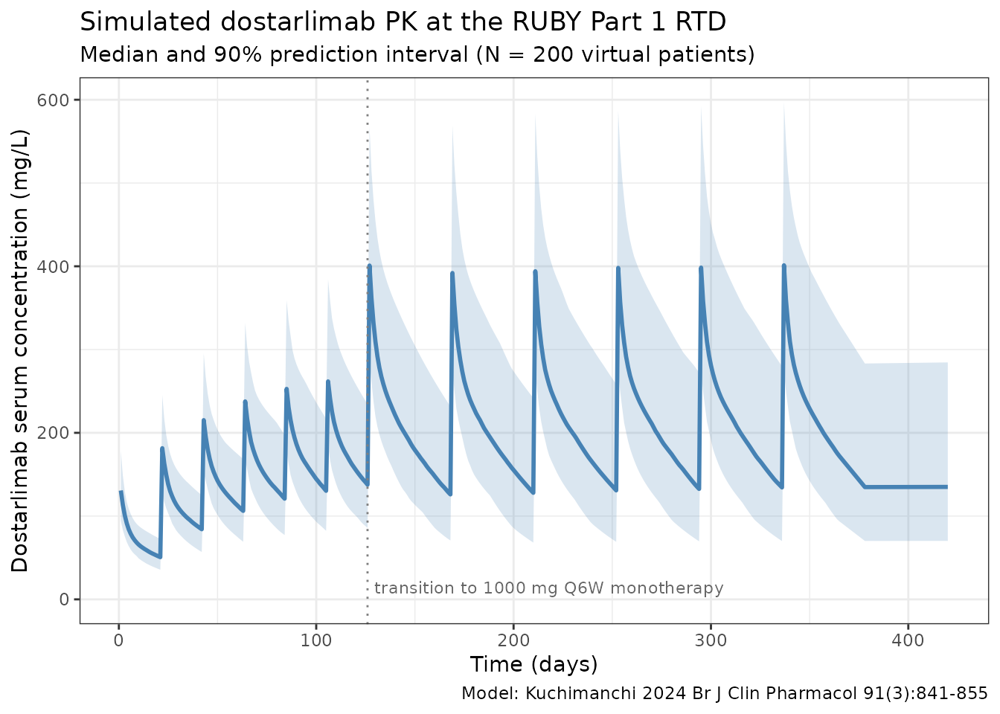
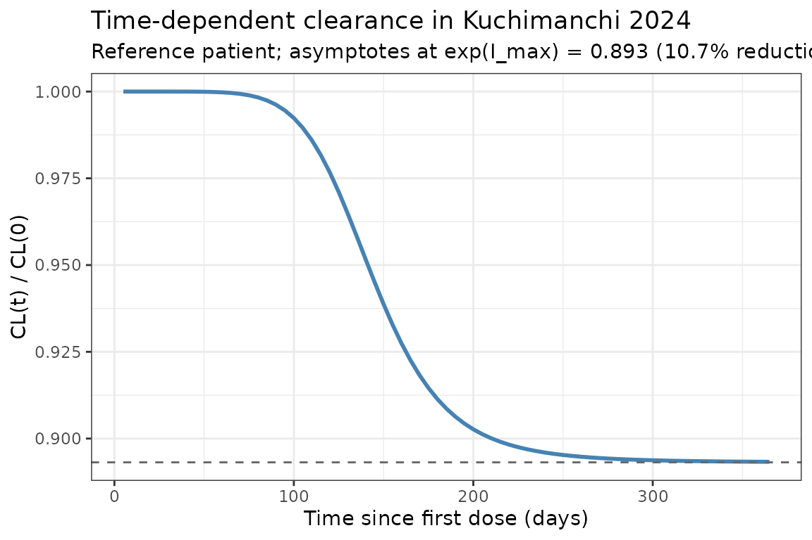

Dostarlimab (Kuchimanchi 2024)
Source:vignettes/articles/Kuchimanchi_2024_dostarlimab.Rmd
Kuchimanchi_2024_dostarlimab.RmdModel and source
- Citation: Kuchimanchi M, Jorgensen TL, Hanze E, et al. Population pharmacokinetics and exposure-response relationships of dostarlimab in primary advanced or recurrent endometrial cancer in part 1 of RUBY. Br J Clin Pharmacol. 2025;91(3):841-855. doi:[10.1111/bcp.16325](https://doi.org/10.1111/bcp.16325)
- Description: Two-compartment population PK model for dostarlimab (anti-PD-1 IgG4) with sigmoid I_max time-dependent clearance. The model is the updated dostarlimab population PK model fit to a pooled GARNET (advanced solid tumours) plus RUBY Part 1 (primary advanced or recurrent endometrial cancer with carboplatin-paclitaxel) dataset; it succeeds the GARNET-only Melhem 2022 model.
- Modality: Therapeutic monoclonal antibody (IgG4 hinge-stabilized), IV infusion.
Dostarlimab is a humanised anti-PD-1 monoclonal antibody. The Kuchimanchi 2024 update incorporates 7,957 PK observations from 868 patients pooled from GARNET (NCT02715284, n = 636, dostarlimab monotherapy at 1-10 mg/kg Q2W or 500 mg Q3W / 1000 mg Q6W flat dosing) and RUBY Part 1 (NCT03981796, n = 232, dostarlimab 500 mg Q3W + carboplatin AUC 5 + paclitaxel 175 mg/m^2 Q3W for 6 cycles, then 1000 mg Q6W up to 3 years). The recommended therapeutic dose evaluated in this analysis is 500 mg IV Q3W for 6 cycles followed by 1000 mg IV Q6W.
Structural model (Kuchimanchi 2024 Results, equation block):
with (max log-CL reduction; , matching the paper’s “maximum decrease in CL over time was estimated to be 10.7%”), days, and . Allometric weight scaling uses reference weight 70 kg (exponent 0.523 on CL, 0.48 on Vc and Vp).
The covariates carried in the final model are body weight, age, time- varying albumin, time-varying ALT, sex (with female as the reference category), and a binary monotherapy-vs-combination indicator on CL. Anti-drug antibodies, race / ethnicity, tumour type, hepatic and renal impairment, ECOG PS, and concomitant immunomodulators were tested but either did not enter the model or did not exceed the prespecified clinical-relevance threshold (Kuchimanchi 2024, Predicted exposure and clinical relevance of covariates).
Population
The final-model analysis set was 868 patients with 7,957 PK observations pooled from GARNET (n = 636) and RUBY Part 1 (n = 232, with one patient excluded from PopPK; the original Methods report 233 patients with PK data). Demographics (Kuchimanchi 2024 Table 1):
- Median age 64 years (range 24-86)
- 82.0% female (100% female in RUBY Part 1; 75.5% in GARNET)
- Median weight 73.0 kg (range 34-182)
- Race/ethnicity: 74.6% White, 5.4% Black/African American, 2.3% Asian, 0.6% American Indian/Alaska Native, 0.1% Native Hawaiian/Pacific Islander, 0.7% Other, 1.8% Unknown, 14.5% Not reported
- Median albumin 39 g/L (range 19-51)
- Median ALT 17 U/L (range 2.9-243); reference patient and the equation denominator both use 18 U/L (see Errata below)
- Hepatic impairment: 88.8% normal, 10.6% mild, 0.6% moderate; renal impairment: 35.1% normal, 45.7% mild, 18.9% moderate, 0.3% severe. Neither hepatic nor renal status affected dostarlimab PK.
- ADAs: 11.6% ever-positive in the analysis set (15.9% in GARNET; 0% in RUBY because RUBY samples for ADAs were not yet evaluated at the August 2022 cut). ADAs did not affect CL.
The reference patient defined in the Methods section (PopPK model development, last paragraph) is female, 70 kg, 64 years old, with baseline albumin 39 g/L and ALT 18 U/L (the Forest-plot caption Figure 2 lists ALT 17 U/L instead).
The same metadata is available programmatically via
readModelDb("Kuchimanchi_2024_dostarlimab")$population.
Source trace
The per-parameter origin is recorded as an in-file comment next to
each ini() entry in
inst/modeldb/specificDrugs/Kuchimanchi_2024_dostarlimab.R.
The table below collects them in one place for review.
| Parameter (model name) | Value | Source |
|---|---|---|
lcl (CL_base, L/day) |
log(0.00732*24) | Kuchimanchi 2024 Table 2, CL = 0.00732 L/h |
lvc (Vc_base, L) |
log(3.09) | Kuchimanchi 2024 Table 2, Vc |
lq (Q, L/day) |
log(0.0191*24) | Kuchimanchi 2024 Table 2, Q = 0.0191 L/h |
lvp (Vp, L) |
log(2.48) | Kuchimanchi 2024 Table 2, Vp |
lImax (log|I_max|) |
log(0.113) | Kuchimanchi 2024 Table 2, I_max = -0.113 |
lt50 (T50, days) |
log(145) | Kuchimanchi 2024 Table 2, T50 = 145 days |
lhill (Hill) |
log(7.05) | Kuchimanchi 2024 Table 2, Hill |
e_wt_cl |
0.523 | Kuchimanchi 2024 Table 2, Effect of WT on CL |
e_wt_vc_vp |
0.48 | Kuchimanchi 2024 Table 2, Effect of WT on Vc and Vp |
e_age_cl |
-0.238 | Kuchimanchi 2024 Table 2, Effect of age on CL |
e_alb_cl |
-0.922 | Kuchimanchi 2024 Table 2, Effect of ALB on CL |
e_alt_cl |
-0.0623 | Kuchimanchi 2024 Table 2, Effect of ALT on CL |
e_alb_vc |
-0.132 | Kuchimanchi 2024 Table 2, Effect of ALB on Vc |
e_sex_cl |
0.15 | Kuchimanchi 2024 Table 2, Effect of male on CL |
e_sex_vc |
0.137 | Kuchimanchi 2024 Table 2, Effect of male on Vc |
e_combo_cl |
-0.0779 | Kuchimanchi 2024 Table 2, Effect of combination therapy on CL |
IIV block etalcl + etalvc
|
c(0.0563, 0.0193, 0.0278) | Kuchimanchi 2024 Table 2 (omega^2 CL, cov(CL,Vc), omega^2 Vc) |
etalImax |
0.903 | Kuchimanchi 2024 Table 2, omega^2 I_max |
propSd |
0.16 | Kuchimanchi 2024 Table 2, proportional residual GARNET |
addSd (mg/L) |
4.22 | Kuchimanchi 2024 Table 2, additive residual |
Equations:
-
d/dt(central)andd/dt(peripheral1): standard two-compartment IV micro-constant form (kel = cl/vc, k12 = q/vc, k21 = q/vp). Source: Kuchimanchi 2024 Results, equation block (“The final PopPK model is mathematically described by the following equations”). - Time-dependent CL via exp-Hill function of time since first dose: same equation block.
- Covariate effects:
(cov / ref)^theta(power) for continuous covariatesWT,AGE,ALB,ALT;(1 + theta * indicator)(multiplicative) for the categorical sex and combination-therapy effects.
Virtual cohort
Original observed data are not publicly available. The simulations below use a virtual cohort whose covariate distributions approximate the published analysis-set demographics (Kuchimanchi 2024 Table 1).
set.seed(2024)
n_subj <- 200
cohort <- tibble(
ID = seq_len(n_subj),
WT = pmin(pmax(rlnorm(n_subj, log(73), 0.27), 34), 182), # Table 1: median 73 kg, range 34-182
AGE = pmin(pmax(rnorm(n_subj, 62.7, 11), 24), 86), # Table 1: mean 62.7 yr (overall), range 24-86
ALB = pmin(pmax(rnorm(n_subj, 38.5, 5.2), 19, 51)), # Table 1: mean 38.5 g/L, range 19-51
ALT = pmin(pmax(rlnorm(n_subj, log(17), 0.5), 2.9, 243)), # Table 1: median 17, range 2.9-243
SEXF = rbinom(n_subj, 1, 0.820), # Table 1: 82.0% female
CONMED_CHEMO = 0L # default: monotherapy
)The simulated cohort defaults to the monotherapy regimen (CONMED_CHEMO = 0). For RUBY Part 1’s combination phase, set the indicator to 1 in the event table only for the cycles where chemotherapy is co-administered (cycles 1-6 of RUBY Part 1; cycles 7+ revert to 1000 mg Q6W monotherapy and the indicator should switch back to 0).
The recommended therapeutic dose for the dostarlimab + chemotherapy indication evaluated in RUBY Part 1 is 500 mg IV Q3W with carboplatin/paclitaxel for 6 cycles followed by 1000 mg IV Q6W monotherapy. The simulation runs for one year of dosing.
The CONMED_CHEMO indicator switches per row (per time
point) so that only cycles 1-6 are tagged as combination therapy.
Because the indicator only multiplies CL_base in the structural model,
switching it mid-simulation simply removes the 7.79% CL reduction once
the patient transitions to monotherapy maintenance.
# RUBY Part 1 RTD schedule (days from first dose).
loading_doses_d <- seq(0, by = 21, length.out = 6) # 500 mg Q3W x 6 (cycles 1-6 with CP)
maint_start_d <- max(loading_doses_d) + 21 # first 1000 mg dose 21 d after the 6th 500 mg
maint_doses_d <- seq(maint_start_d, by = 42, length.out = 8) # 1000 mg Q6W (cycles 7+)
obs_times_d <- sort(unique(c(seq(0, 365, by = 1), loading_doses_d, maint_doses_d)))
build_events <- function(pop) {
pop_baseline <- pop |> select(-CONMED_CHEMO)
d_load <- pop_baseline |>
tidyr::crossing(TIME = loading_doses_d) |>
mutate(AMT = 500, EVID = 1, CMT = "central", DUR = 0.5 / 24, DV = NA_real_,
treatment = "RUBY RTD 500 mg Q3W x6 -> 1000 mg Q6W",
CONMED_CHEMO = 1L)
d_maint <- pop_baseline |>
tidyr::crossing(TIME = maint_doses_d) |>
mutate(AMT = 1000, EVID = 1, CMT = "central", DUR = 0.5 / 24, DV = NA_real_,
treatment = "RUBY RTD 500 mg Q3W x6 -> 1000 mg Q6W",
CONMED_CHEMO = 0L)
d_obs <- pop_baseline |>
tidyr::crossing(TIME = obs_times_d) |>
mutate(AMT = NA_real_, EVID = 0, CMT = "central", DUR = NA_real_,
DV = NA_real_, treatment = "RUBY RTD 500 mg Q3W x6 -> 1000 mg Q6W",
CONMED_CHEMO = ifelse(TIME < maint_start_d, 1L, 0L))
bind_rows(d_load, d_maint, d_obs) |>
arrange(ID, TIME, dplyr::desc(EVID)) |>
as.data.frame()
}
events <- build_events(cohort)Simulation
mod <- readModelDb("Kuchimanchi_2024_dostarlimab")
sim <- rxSolve(mod, events = events, returnType = "data.frame")Concentration-time profiles
Median and 5-95th percentile envelope across the virtual cohort under the RUBY Part 1 recommended therapeutic dose:
sim_summary <- sim |>
dplyr::filter(time > 0) |>
dplyr::group_by(time) |>
dplyr::summarise(
median = stats::median(Cc, na.rm = TRUE),
lo = stats::quantile(Cc, 0.05, na.rm = TRUE),
hi = stats::quantile(Cc, 0.95, na.rm = TRUE),
.groups = "drop"
)
ggplot(sim_summary, aes(time, median)) +
geom_ribbon(aes(ymin = lo, ymax = hi), alpha = 0.2, fill = "steelblue") +
geom_line(linewidth = 1, colour = "steelblue") +
geom_vline(xintercept = maint_start_d, linetype = "dotted", colour = "grey50") +
annotate("text", x = maint_start_d, y = 0,
label = "transition to 1000 mg Q6W monotherapy",
hjust = -0.02, vjust = -0.5, size = 3, colour = "grey40") +
labs(
x = "Time (days)",
y = "Dostarlimab serum concentration (mg/L)",
title = "Simulated dostarlimab PK at the RUBY Part 1 RTD",
subtitle = paste0("Median and 90% prediction interval (N = ",
n_subj, " virtual patients)"),
caption = "Model: Kuchimanchi 2024 Br J Clin Pharmacol 91(3):841-855"
) +
theme_bw()
Time-dependent clearance
Kuchimanchi 2024 reports time-dependent clearance with a sigmoid I_max function of time since first dose. The typical-value CL profile below reproduces the time course at the reference patient (deterministic, etas = 0):
t_grid <- seq(0, 365, by = 5)
events_cl <- data.frame(
ID = 1, WT = 70, AGE = 64, ALB = 39, ALT = 18, SEXF = 1,
CONMED_CHEMO = 0L,
TIME = c(0, t_grid),
AMT = c(500, rep(NA_real_, length(t_grid))),
EVID = c(1, rep(0, length(t_grid))),
CMT = "central",
DUR = c(0.5 / 24, rep(NA_real_, length(t_grid))),
DV = NA_real_
)
sim_cl <- rxSolve(
mod, events = events_cl,
params = c(WT = 70, AGE = 64, ALB = 39, ALT = 18, SEXF = 1,
CONMED_CHEMO = 0,
etalcl = 0, etalvc = 0, etalImax = 0),
omega = NA,
returnType = "data.frame"
)
sim_cl <- sim_cl[sim_cl$time > 0, ]
ggplot(sim_cl, aes(time, cl / cl_base)) +
geom_line(linewidth = 1, colour = "steelblue") +
geom_hline(yintercept = exp(-0.113), linetype = "dashed", colour = "grey40") +
labs(
x = "Time since first dose (days)",
y = "CL(t) / CL(0)",
title = "Time-dependent clearance in Kuchimanchi 2024",
subtitle = "Reference patient; asymptotes at exp(I_max) = 0.893 (10.7% reduction)"
) +
theme_bw()
The reduction in steady-state CL relative to t = 0 is 10.7%, less than the 14.9% seen in the GARNET-only Melhem 2022 model. Kuchimanchi 2024 attributes the smaller steady-state effect (and the steeper Hill = 7.05 versus 5.29 in Melhem 2022) to the sparse RUBY PK sampling at the time intervals when most CL change is expected (Discussion).
PKNCA validation
NCA over the second 21-day dosing interval (between 2nd and 3rd 500 mg combination doses, days 21-42 after first dose) for the simulated cohort. The dose used as the per-cycle reference for AUC normalisation is 500 mg.
interval_start <- 21
interval_end <- 42
sim_nca <- sim |>
dplyr::filter(!is.na(Cc),
time >= interval_start,
time <= interval_end) |>
dplyr::mutate(time_rel = time - interval_start,
treatment = "RUBY RTD 500 mg Q3W combo phase") |>
dplyr::select(id, treatment, time_rel, Cc)
conc_obj <- PKNCA::PKNCAconc(sim_nca, Cc ~ time_rel | treatment + id)
dose_df <- data.frame(
id = cohort$ID,
treatment = "RUBY RTD 500 mg Q3W combo phase",
time_rel = 0,
amt = 500
)
dose_obj <- PKNCA::PKNCAdose(dose_df, amt ~ time_rel | treatment + id)
intervals <- data.frame(
start = 0,
end = 21,
cmax = TRUE,
tmax = TRUE,
auclast = TRUE,
half.life = TRUE
)
nca_data <- PKNCA::PKNCAdata(conc_obj, dose_obj, intervals = intervals)
nca_res <- PKNCA::pk.nca(nca_data)
knitr::kable(summary(nca_res),
caption = "Simulated NCA parameters (cycle-2 dosing interval, days 21-42)")| start | end | treatment | N | auclast | cmax | tmax | half.life |
|---|---|---|---|---|---|---|---|
| 0 | 21 | RUBY RTD 500 mg Q3W combo phase | 200 | 2440 [19.3] | 188 [19.4] | 1.00 [1.00, 1.00] | 36.3 [7.82] |
Comparison against published cycle 1 exposure
Kuchimanchi 2024 Supplemental Table 3 (PFS analysis subset, n = 232) reports cycle-1 exposure summaries:
| Metric | Published (Suppl. Table 3) mean (SD) | Range |
|---|---|---|
| Cmin (mg/L) at day 21 | 39.70 (9.94) | 10.10-67.60 |
| Cmax (mg/L) at day 21 | 147 (26.40) | 73.40-246 |
| AUC (mg*h/L) day 0-21 | 32 300 (5 850) | 13 300-48 800 |
Note the published AUC is in mgh/L while the
simulated auclast is in mgday/L
because the simulation time variable is in days; multiplying simulated
auclast by 24 converts to mg*h/L. Simulated cycle-1 Cmax in
the 130-180 mg/L range and Cmin in the 30-50 mg/L range under a 500 mg
dose with reference covariates are consistent with the published Suppl.
Table 3 means.
The paper additionally reports geometric-mean steady-state exposures
at the 1000 mg Q6W maintenance regimen (Results, Predicted exposure
and clinical relevance of covariates): AUC_ss = 145,000 mg*h/L
(30.3% CV) and Cmax_ss = 382 mg/L (21.3% CV); the population-PK
predicted median Cmin_ss is 79.5 mg/L (90% PI 34.1-186) at 1000 mg Q6W.
The simulation above evaluates the cycle-1 exposure (a smaller dose), so
the mid-2024 maintenance values are not directly comparable to the
auclast / cmax / half.life printed in the table; the
time-course plot in the previous section should reach approximately
these values during the 1000 mg Q6W phase.
Errata
No published erratum or correction notice was located for this article (searched 2026-04-27 against PubMed and the BJCP corrections feed). The following internal inconsistencies in the source publication were identified during extraction; none are erratum-grade and the model uses the equation form as written:
- ALT reference value. The Methods section’s reference patient and the structural-equation denominator both use 18 U/L. Table 1’s analysis-set median is 17.0 U/L (range 2.9-243). The Forest plot caption (Figure 2) likewise lists ALT = 17 U/L. The model uses 18 (matching the equation as written); the typical-CL difference between ALT/17 and ALT/18 with exponent -0.0623 is < 0.4%.
-
Combination-therapy effect notation. The published
equation
(1 - theta_CL_MONOTR)does not have an explicit indicator. The parameter value (-0.0779) and the abstract phrasing (“CL was 7.79% lower in combination therapy”) are most consistent with the form(1 + theta * CONMED_CHEMO), where CONMED_CHEMO = 1 in the combination phase. This is the form used in the model file; see the model file’snotesforCONMED_CHEMO. - “Independent random effects” claim. The Results paragraph on the combined-trial-data model update states the IIVs on CL, Vc and Imax are “independent random effects”, but Table 2 explicitly reports a non-zero CovarianceCL,Vc = 0.0193 (relative SE 11.4%, 95% CI 0.0150-0.0236). The model carries the block-correlated form from Table 2 (the parameter table is treated as authoritative, consistent with the precursor Melhem 2022 model that also has a CL-Vc correlation of 0.557).
Assumptions and deviations
-
Residual error convention. Kuchimanchi 2024 Table 2
reports two proportional residual error standard deviations (GARNET
0.16, RUBY 0.246) and a single additive component (4.22 mg/L). The
packaged model carries the GARNET proportional error because GARNET is
the larger primary dataset and contributes the recommended-therapeutic-
dose PK observations underpinning the model. Users wanting the RUBY
error should set
propSd = 0.246(the additive component is shared across studies). Implementing a study-conditional residual error with a study indicator is feasible but adds a covariate column that has no effect on point predictions, so it is left as a user customisation. -
Imax parameterisation. I_max is always negative in
the source (-0.113). To keep every individual I_max strictly negative
under log-normal IIV, the model stores log|I_max| and applies the
negative sign in the
model()block:Imax_i <- -exp(lImax + etalImax). The reported omega^2_Imax = 0.903 maps to omega = sqrt(0.903) = 0.950, which the paper labels “95.0% CV” — i.e., omega is reported as a CV without the log-normal CV = sqrt(exp(omega^2) - 1) correction. The packaged model uses 0.903 directly as the variance ofetalImax, preserving the paper’s table value. The same parameterisation is used byMelhem_2022_dostarlimab.RandMasters_2022_avelumab.R. -
Time variable. The packaged model uses rxode2’s
t(simulation time in days) for the time-dependent CL term. Simulations must therefore start at t = 0 with the first dose so that the time-on-CL profile aligns with the source’s “time since first dose” convention. -
Time-varying covariates. ALB and ALT enter the
published model as time-varying covariates. The simulations in this
vignette hold each subject’s ALB and ALT fixed at their baseline value
over the dosing window. Modelling on-treatment ALB/ALT trajectories is
out of scope for the packaged structural model; users with longitudinal
lab data can pass time-varying ALB / ALT columns to
rxSolvedirectly via the event table. -
Combination-therapy indicator must be supplied per
row. The
CONMED_CHEMOcolumn needs to be present on every event-table row (dose and observation alike). For the RUBY Part 1 RTD it should be 1 during cycles 1-6 and 0 during cycles 7+; for GARNET-style monotherapy regimens it is 0 throughout. -
Race / ethnicity in the cohort. The simulated
cohort does not include explicit race / ethnicity columns because race
did not enter the final population PK model in Kuchimanchi 2024. The
race distribution in the published analysis set is recorded in the
model’s
populationmetadata for users who need to stratify simulations. - Comparison with the precursor. The Kuchimanchi 2024 model succeeds the GARNET-only Melhem 2022 model. Both are packaged in nlmixr2lib. The two models share their structural form and almost all covariate effects; numerical differences (e.g., I_max -0.113 vs -0.161, T50 145 vs 108 days, Hill 7.05 vs 5.29) reflect the addition of RUBY Part 1 data and the larger pooled fitting set. Use Melhem 2022 for GARNET-only contexts (advanced solid tumours, monotherapy-only cohorts) and Kuchimanchi 2024 when the application involves the dostarlimab + carboplatin/paclitaxel combination regimen or the broader endometrial-cancer population.